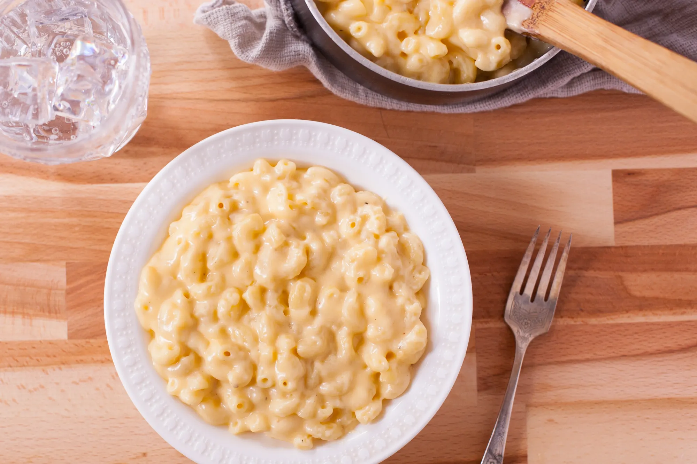

Back to Homepage
Macaroni & Cheese Recipe

A simple Macaroni & Cheese dish (Recipe Source)
Ingredients:
- 453.59 g of elbow macaroni
- 59.14 ml of butter
- 59.14 ml of all-purpose flour
- 2.46 ml of salt
- 0.25 ml of black pepper
- 473.18 ml of (warmed) milk
- 473.18 ml of shredded cheddar cheese or 226.79 g of cheddar cheese
Steps:
- Cook macaroni according to its package directions.
- In medium saucepan, melt butter over medium heat; stir in flour, and cook for 3-5 minutes stirring constantly to form a roux; add salt and pepper; slowly add milk, stirring well after each addition.
- Cook and stir until bubbly.
- Stir in cheese a small amount at a time until fully melted.
- Drain macaroni; add to cheese sauce; stir to coat.